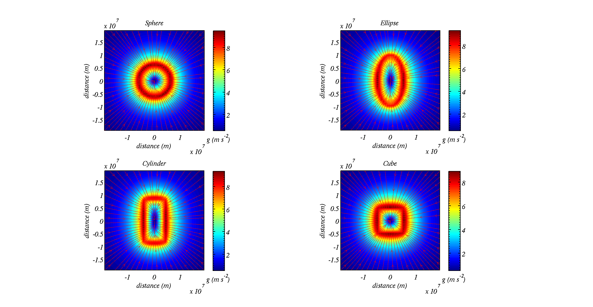

Gravitational field strength for a sphere
- Setting up the problem
-
The aim of this worksheet is to set up and solve an integral to calculate the gravitational field strength on the surface of an earth-like planet
Newton's Law of Universal Gravitation describes the force between two point masses, \(m_1\) and \(m_1\) separated by the vector \(\vec{r}_{1,2}\).
\[ \vec{F}=G\frac{m_1 m_2}{r_{1,2}^3} \vec{r}_{1,2} \]
In order to calculate the gravitational field strength of a planet we can apply this law to infinitesimal mass elements of a sphere. The gravitation field strength is then the sum of all contributions from each mass element. In otherwords we treat each small element of a sphere as point masses and integrate up their contribution to the gravitational force.
Some further definitions...Let us define the mass of the sphere equal to that of earth, \(m_e=6.0\times 10^{24}\) kg, and the radius equal to the radius of earth, \(R_e=6.4\times 10^6\) m. The density of this sphere is then:
\[ \rho=\frac{m_e}{\frac{4}{3}\pi R_e^3} \cong 5.46 \times 10^3\,{kg} \, {m}^{-3} \]
- Spherical coordinate system
-
We use spherical coordinates to solve this problem because the problem's boundary is a sphere. This makes it easier to define the limits in any integrals we set up.
We also need to define distances between objects that aren't necessarily at the origin. This is most easily done in Cartesian coordinates (x, y and z); hence, it is useful to know how to convert between spherical and cartesian coordinates.
More info on spherical coordinates...Conversions from spherical to Cartesian coordinates are:
\[ x=r\sin\theta\sin\phi \]
\[ y=r\sin\theta\cos\phi \]
\[ z=r\cos\theta \]
where \(r\) is an objects distance from the origin, \(\theta\) is the angle made between the line joining the origin to the point and the z-axis and \(\phi\) is the angle made with the x-axis and the projection of the line joining the origin to the point onto the x-y plane.
Schematic of the spherical coordinate system giving x, y and z as functions of \(r\), \(\phi\) and \(\theta\).
- The volume and mass elements
-
We assume that the density of the sphere is constant and equal to the ratio of the mass of earth to the volume of earth. In this case a mass element is the density, \(\rho\), multiplied by the volume element, \(dV\).
More info on volume element...The volume element in spherical coordinates is
\[ dV=r^2\sin\theta d\theta d \phi d r \]
The derivation of the volume element in spherical coordinates.
A mass element is this volume element multiplied by the density, which is a constant for this problem.
\[ dm=\rho r^2\sin\theta d\theta d \phi d r \]
- Element of force on an mass \(m_1\) at distance \(R_1\) from the centre of sphere
-
This problem can be simplified by recognising that the magnitude of the force on an object only depends on the distance from the centre. We therefore choose the position of the object to lie at distance \(R_1\) along the z-axis.
More on the element of force...The force due to a mass element is therefore:
\[ dF=\frac{Gm_1\rho r^2\sin\theta }{r^2\sin^2\theta\cos^2\phi +r^2\sin^2\theta\sin^2\phi+\left(R_1-r\cos\theta \right)^2} \,d\theta d\phi dr \]
where the denominator has been derived using Pythagoras' theorem: \(r_{1,2}^2=\left(X-x\right)^2 +\left(Y-y\right)^2 +\left(Z-z\right)^2 \)
This may be simplified, using the trig identity \(1\equiv \sin^2\phi+\cos^2\phi\) expanding the bracket in the denominator and applying the trig identity again, to:
\[ dF=\frac{Gm_1\rho r^2\sin\theta}{r^2+R_1^2-2R_1r\cos\theta} \,d\theta d\phi dr \]
- Element of force in z-direction
-
The gravitational field strength due to a sphere acts downwards towards the centre. Thus, because of symmetry we may neglect other forces (they cancel each other exactly). For our mass, \(m_1\) we therefore need to calculate the force in the z-direction. We therefore need to resolve the full force into a component that points only along the z-axis and integrate that up.
More on the element of force in the z-direction...It turns out this is equal to
\[ dF_z=\frac{Gm_1\rho r^2\sin\theta\left(R_1-r\cos\theta\right)}{\left(r^2+R_1^2-2R_1r\cos\theta \right)^{3/2}} \,d\theta d\phi dr \]

The force in the z-direction between two point masses can be determined by multiplying the magnitude of the force by the ratio of distance between the point masses in the z-direction and the vector joining the two masses.
- Integrating the elements up
-
Once we have written down the force elements we just need to integrate them all up. We need to evaluate the following triple integral:
\[ F_z=Gm_1\rho \int _0^{2\pi} \int _0^{R_e} \int _0 ^\pi \frac{r^2\sin\theta\left(R_1-r\cos\theta\right)}{\left(r^2+R_1^2-2R_1r\cos\theta \right)^{3/2}} \,d\theta d\phi dr \]
The integration...First we may easily integrate wrt \(\phi\) by multiplying the integrand by \(2\pi\)
\[ F_z=2\pi G m_1\rho \int _0^{R_e} \int _0 ^\pi \frac{r^2\sin\theta\left(R_1-r\cos\theta\right)}{\left(r^2+R_1^2-2R_1r\cos\theta \right)^{3/2}} \,d\theta dr \]
Secondly we integrate wrt \(\theta\). This part is tricky. We make the substitution \(u=r^2+R_1^2-2R_1r\cos\theta\) and differentiate to get \(du = 2R_1r\sin\theta d\theta\). The numerator of the integrand becomes \(\frac{r}{4R_1^2}\left( 2R_1^2+u-r^2-R_1^2\right) du\), so the integral becomes:
\[ I=\frac{r}{4R_1^2}\int \frac{1}{u^{1/2}}+\frac{\left(R_1^2-r^2\right)}{u^{3/2}} du \]
which equals
\[ \begin{eqnarray} I&=&\frac{r}{4R_1^2}\left[2u^{1/2}-2\left(R_1^2-r^2\right)u^{-1/2} \right]_{\left(R_1-r\right)^2}^{\left(R_1+r\right)^2}\\ &=&\frac{r}{2R_1^2}\left[\left( R_1+r \right)-\left( R_1-r \right)-\frac{\left(R_1-r\right)\left(R_1+r \right)}{R_1+r}+\frac{\left(R_1-r\right)\left(R_1+r \right)}{R_1-r} \right]\\ &=&\frac{2r^2}{R_1^2} \end{eqnarray} \]
We then insert \(I\) into the remaining integral over \(r\):
\[ \begin{eqnarray} F_z&=&2\pi G m_1\rho \int _0^{R_e} \frac{2r^2}{R_1^2} dr\\ &=&m_1 \times \frac{4}{3}\pi \rho R_e^3 \times \frac{G}{R_1^2} \end{eqnarray} \]
which yields:
\[ F_z=m_1 \times \frac{4}{3}\pi \rho R_e^3 \times \frac{G}{R_1^2} \]
the factor \(\frac{4\pi\rho R_e^3}{3}\) is the mass of the planet, \(m_e=6.0\times 10^{24}\) kg. If \(R_1=R_e\) (i.e. the mass is on the surface) then \(\frac{Gm_e}{R_e^2}\) is the gravitational field strength, usually referred to as \(g\), which agrees well with the measured value.
Substituting \(R_e=6.4\times 10^4\) m; \(m_e=6.0\times 10^{24}\) kg and \(G=6.67\times 10^{-11}\) m3 kg-1 s-2 yields \(g=9.8\) m s-2.
- MATLAB scripts part 1
-
There is a MATLAB script here that solve this problem approximately:
Download it to MATLAB and take a look at the code, reading the comments as you go through. For more information on running it click on the tab below.MATLAB gravity script...First call the program using:
[forcex,forcey,forcez,mag_force]=gravity_sampling01([0 0 6.4e6])
This will set up lots of mass elements within a sphere, radius equal to that of earth, and calculate the force on a unit mass at position[0 0 6.4e6]in (x,y,z) coordinates. You should find it equals about 9.63 N (which is approximately equal to earth's gravity). The output is the force in the x-direction, the y-direction and the z-direction and also the magnitude of the force.
Next, on line 5, change the shape variable to read:
shape='ellipse';
and un comment line 36 so it sets the position of the point mass to a point on the semi-minor equator of the ellipsoid. Run the model using:
[forcex,forcey,forcez,mag_force]=gravity_sampling01([0 0 6.4e6])
The above will calculate the force of gravity due to a planet that is an ellipse with aspect ratio 2, with the same volume as earth and the same mass around the equator . Was it more or less than that of spherical earth?
Try un commenting line 37 so it sets the position of the point mass to a point on the semi-major equator of the ellipsoid. Run the model using:
[forcex,forcey,forcez,mag_force]=gravity_sampling01([0 0 6.4e6])
How does the value of gravity change? Can you explain your results.
Next, on line 5, change the shape variable to read:
shape='cylinder';
and un comment line 48 so it sets the position of the point mass to a point on the top of the cylinder. Run the model using:
[forcex,forcey,forcez,mag_force]=gravity_sampling01([0 0 6.4e6])
What is your value of gravity now?
try uncommenting line 49 so it sets the position of the point mass to a point on the side of the cylinder on its radius. Run the model using:
[forcex,forcey,forcez,mag_force]=gravity_sampling01([0 0 6.4e6])
What is your value of gravity now? Can you explain your results?
What do you think the force at (0,0,0) is? i.e. the net force at the centre of the world? Run the model to confirm your guess (how should the model be called?) - MATLAB scripts part 2
-
There is another MATLAB script here that is used in conjunction with the first script:
This script moves the point mass around to map out the gravity field due to different shapes.
Download it to MATLAB and take a look at the code, reading the comments as you go through. For more information on running it click on the tab below.MATLAB batch script...First, make sure that lines 25, 36, 37, 48, 49 and 56 of
gravity_sampling01.mare commented
Secondly, set the variableplot_flagon line 7 ofgravity_sampling01.mtofalse
Thirdly, set the variablen_pointson line 9 ofgravity_sampling01.mto50and save the file
Run the codebatch_gravity_sampling01.mby making sure your both scripts are in your working directory and typing
batch_gravity_sampling01
The program will take a while to run, it will calculate the gravity field for a sphere, ellipsoid, cylinder and cube that have the same volume as earth. When the program has finished running it will plot out a 2-d slice of the gravity fields, with streamlines depicting them
Plots of the gravity fields for a sphere, ellipsoid (aspect ratio 2), cylinder (aspect ratio 2) and cube each with the same volume and mass as earth.
Question: can you explain what an observer would feel (in terms of his / her weight) as they move around the surface of each object?
What would an observer feel at the centre of the earth?